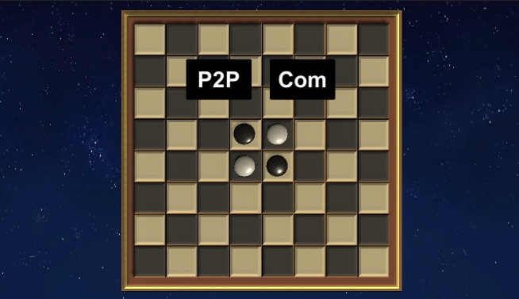
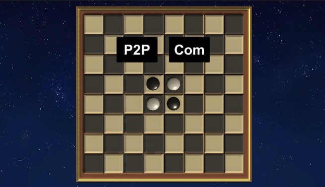

 

omok과 마찬가지로 p2p형식으로 만들어졌으며, 로고에 othello버튼을 누르고 들어오시면 보이는 첫 화면이 사진1이예요.
똑같이 Host와 Client 버튼을 만들어 서버에 접속하게 만들어 놨고, 게임을 시작하면 각자의 Turn을 알려주고, omok과 같은 라이브러리에 로직은 구성해서 게임이 진행되게 만들었어요.
omok과 다르게 돌을 놓았을 때, 다른 돌이 뒤집히게 만들기 위해 돌에 애니매이션을 달고 마지막에 이벤트로 스크립트를 달아 뒤집히게 만들었으며 서로 돌을 다 놓고 더이상 돌을 놓을 곳이 없을 때 게임이 종료되어 승패가 나오게 만들었습니다.